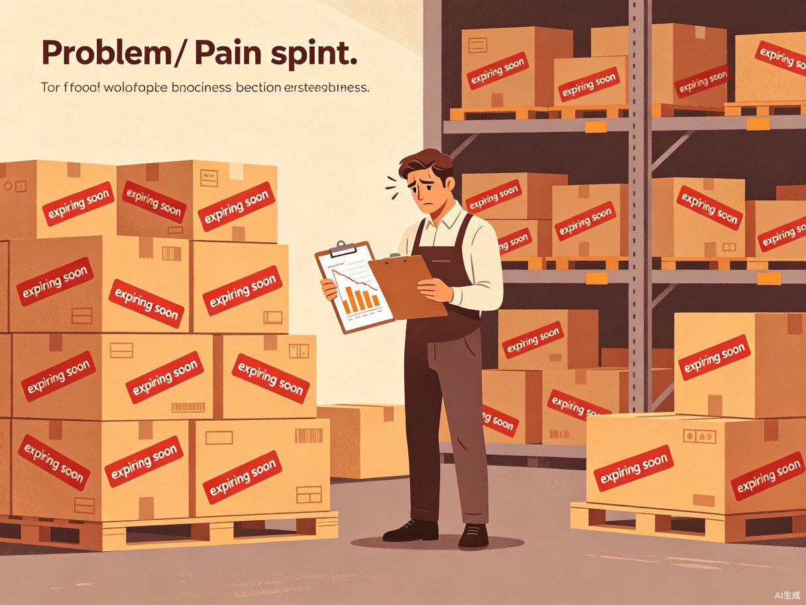
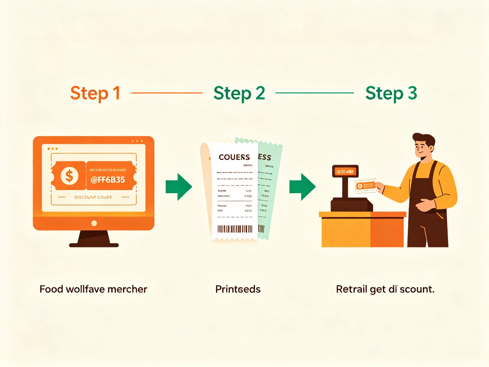

创意介绍
项目名称
食惠码 —— 一款面向食品批发行业的临期食品兑换码管理工具。
要解决什么问题
食品批发行业中，临期食品的返货率居高不下，批发商和经销商面临大量临期商品需要退回供应商或直接报废处理，造成严重的经济损失和食品浪费。传统处理方式效率低、成本高，且缺乏有效的促销手段来加速临期食品的去化。
为什么会想到做这个
在食品批发流通环节中，临期商品的处理一直是一个行业痛点。批发商往往因为缺乏灵活的促销工具，只能被动接受返货或低价甩卖。我们希望通过技术手段，为批发商提供一个简单、高效、可追溯的临期食品促销解决方案，将即将过期的食品以折扣兑换码的形式推向终端消费者，实现多方共赢。
产品形态
一款基于 Web 的兑换码管理工具，支持批量生成折扣兑换码、打印兑换凭证、客户扫码核销、消费打折结算等功能。适用于食品批发商、经销商及终端零售门店使用。
行业现状与数据
食品批发行业的返货率普遍在 15%-30% 之间，部分品类甚至更高。大量临期食品因缺乏有效的促销渠道而被直接报废，不仅造成经济损失，也加剧了食品浪费问题。通过兑换码工具，批发商可以将临期食品以折扣形式快速推向消费者，将返货率降低 50% 以上。
目标用户及痛点

食品批发商
临期商品积压仓库，占用资金和仓储空间；返货流程繁琐，退运成本高；缺乏有效的临期品促销工具，只能被动降价或报废。
终端零售商
需要灵活的促销手段吸引顾客；传统打折方式缺乏精准性和可追溯性；希望获得批发商提供的促销支持来提升销量。
终端消费者
希望以更优惠的价格购买品质尚好的食品；对临期食品存在安全顾虑，需要可信的渠道和保障；喜欢简单直接的优惠方式。
解决方案

批量生成兑换码
批发商在系统中录入临期商品信息，设定折扣力度和有效期，一键批量生成唯一兑换码
打印兑换凭证
将兑换码打印为纸质凭证或电子券，随货配送到下游零售商或直接发放给消费者
客户消费核销
消费者在购物时出示兑换码，收银系统自动识别折扣并扣减应付金额
数据追踪分析
后台实时统计兑换码的发放量、核销率、折扣金额等数据，帮助批发商优化促销策略
核心功能模块
| 功能模块 | 说明 | 使用场景 |
|---|---|---|
| 兑换码生成器 | 支持自定义折扣比例、有效期、适用商品范围，批量生成唯一兑换码 | 批发商录入临期商品后快速生成促销码 |
| 凭证打印 | 将兑换码输出为可打印的纸质凭证，支持自定义版式和批量打印 | 随货配送或门店发放 |
| 核销管理 | 收银端扫码或手动输入兑换码，自动计算折扣并完成核销 | 消费者结账时使用兑换码享受折扣 |
| 数据看板 | 实时展示发放量、核销率、折扣总额、商品去化速度等关键指标 | 批发商评估促销效果，优化策略 |
| 临期预警 | 自动监控库存商品保质期，提前预警即将临期的商品批次 | 提前规划促销活动，避免被动返货 |
价值与意义
商业价值
帮助批发商将临期食品从"被动报废"转变为"主动促销"，预计可降低返货率 50% 以上，减少经济损失。同时提升下游零售商的进货意愿和终端消费者的复购率，形成良性商业循环。
社会价值
有效减少食品浪费，响应国家反食品浪费的政策号召。通过将临期食品以合理折扣推向消费者，既保障了食品安全（在保质期内销售），又让消费者享受实惠，实现经济与社会效益的双赢。
效率提升
替代传统的人工记账和手工打折方式，通过数字化工具实现兑换码的全生命周期管理。从生成、发放、核销到数据分析，全流程自动化，大幅降低人工成本和出错率。
技术方案
本项目将使用 TRAE Work / TRAE IDE 进行全程开发，充分利用 AI 辅助编程能力快速构建产品原型和完整功能。
前端技术
HTML / CSS / JavaScript 构建响应式 Web 应用，支持 PC 端管理后台和移动端核销页面
后端服务
Node.js / Python 提供 RESTful API，处理兑换码生成、核销验证、数据统计等核心业务逻辑
数据存储
SQLite / JSON 文件存储，轻量级部署方案，适合中小型食品批发商快速上手
打印与核销
浏览器打印 API 实现凭证打印，二维码生成库支持扫码核销，兼容各种收银场景
参赛赛道
本项目申报 生活娱乐赛道，同时叠加申报 社会公益附加赛题（减少食品浪费方向）。
食惠码聚焦食品批发行业的实际痛点，通过技术手段促进临期食品消费，兼具商业实用价值和社会公益意义，完美契合大赛"小切口、深挖掘"的选题理念。
让每一份食品都不被浪费
食惠码 —— 用技术连接批发商与消费者，让临期食品找到它的新主人